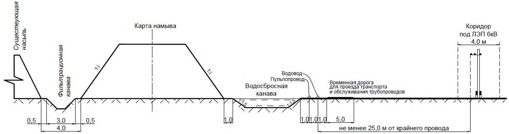
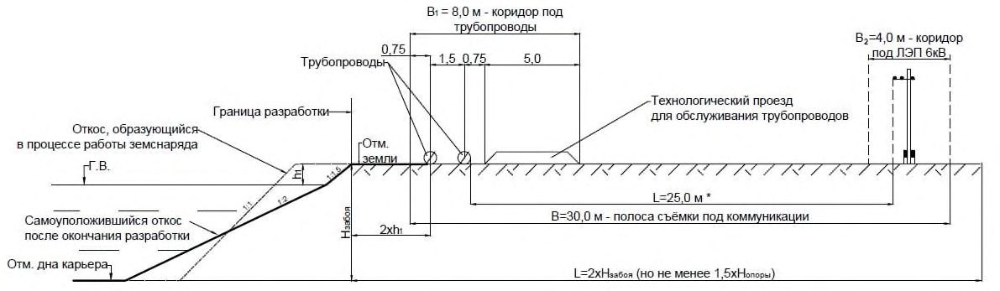
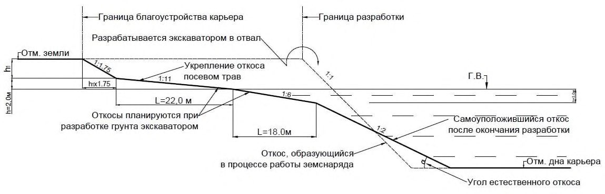
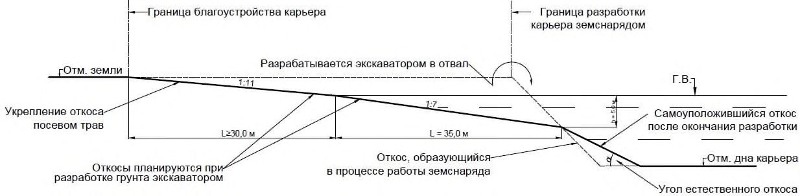
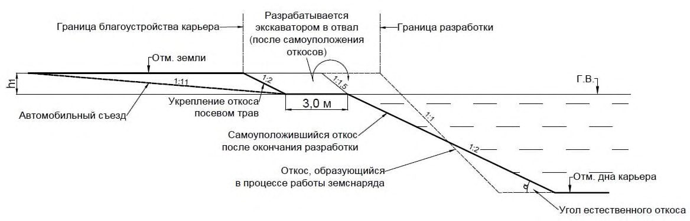
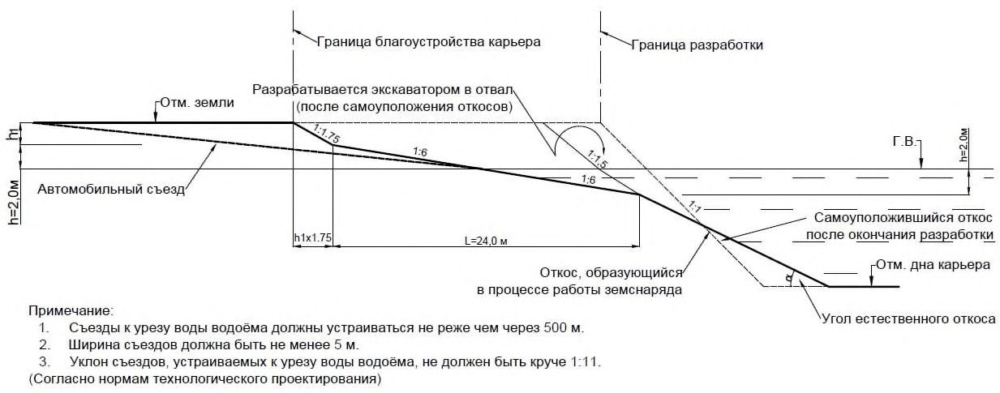

СП 407.1325800.2018 «Земляные работы. Правила производства работ способом гидром»
О документе: разработчики, утверждение, регистрация, ключевые слова
СВОД ПРАВИЛ
СП 407.1325800.2018
Правила производства способом гидромеханизации
Издание официальное
Москва 2018
1 ИСПОЛНИТЕЛЬ - Общество с ограниченной ответственностью Компания «Трансгидромеханизация» (ООО «ТГМ»)
2 ВНЕСЕН Техническим комитетом по стандартизации ТК 465 «Строительство»
3 ПОДГОТОВЛЕН к утверждению Департаментом градостроительной деятельности и архитектуры Министерства строительства и жилищнокоммунального хозяйства Российской Федерации (Минстрой России)
4 УТВЕРЖДЕН приказом Министерства строительства и жилищнокоммунального хозяйства Российской Федерации от 24 декабря 2018 г. № 853/пр и введен в действие с 25 июня 2019 г.
5 ЗАРЕГИСТРИРОВАН Федеральным агентством по техническому регулированию и метрологии (Росстандарт)
В случае пересмотра (замены) или отмены настоящего свода правил соответствующее уведомление будет опубликовано в установленном порядке. Соответствующая информация, уведомление и тексты размещаются также в информационной системе общего пользования - на официальном сайте разработчика (Минстрой России) в сети Интернет
© Минстрой России, 2018
Настоящий нормативный документ не может быть полностью или частично воспроизведен, тиражирован и распространен в качестве официального издания на территории Российской Федерации без разрешения Минстроя России
Дата введения - 2019-06-25
УДК 624.131/.132
ОКС 93.020
Ключевые слова: земляные работы, проектирование, производство, гидромеханизация, сооружения
\_\_\_\_\_\_\_\_\_\_\_\_\_\_\_\_\_\_\_\_\_\_\_\_\_\_\_\_\_\_\_\_\_\_\_\_\_\_\_\_\_\_\_\_\_\_\_\_\_\_\_\_\_\_\_\_\_\_\_\_\_\_\_\_\_
Введение
6 ВВЕДЕН ВПЕРВЫЕ
Настоящий свод правил разработан в соответствии с требованиями федеральных законов от 29 декабря 2004 г. № 190-ФЗ «Градостроительный кодекс Российской Федерации», от 30 декабря 2009 г. № 384-ФЗ «Технический регламент о безопасности зданий и сооружений», от 21 июля 1997 г. № 116ФЗ «О промышленной безопасности опасных производственных объектов» и в развитие СП 34.13330, СП 39.13330, СП 45.13330 и СП 119.13330.
Настоящий свод правил разработан авторским коллективом Общества с ограниченной ответственностью Компании «Трансгидромеханизация» ( В.Н. Васильев - руководитель работы, канд. техн. наук Е.В. Лизунов, Г.Р. Белов, В.Г. Чуйкин ) при участии Акционерного общества «Мосгипротранс» ( В.И. Эдель , А.А. Бардаков ), Федерального государственного бюджетного образовательного учреждения высшего образования «Российский университет транспорта» (д-р техн. наук, проф. С.Я. Луцкий , канд. техн. наук А.И. Штейн , канд. техн. наук А.М. Черкасов , канд. техн. наук Н.Н. Банова ), Акционерного общества «Научно-исследовательский институт транспортного строительства» (д-р техн. наук, проф. Г.С. Переселенков , канд. техн. наук Н.А. Ефремов , В.В. Казаркина , канд. техн. наук Г.Г. Орлов, д-р техн. наук, проф. А.А. Цернант ).
ЗЕМЛЯНЫЕ РАБОТЫ Правила производства способом гидромеханизации
Earthworks. Production rules by hydromechanization method
1Область применения
Настоящий свод правил распространяется на проектирование, производство и оценку качества земляных работ способом гидромеханизации при возведении земляного полотна автомобильных и железных дорог, судоходных каналов, берегозащиты, портов и других инженерных сооружений, где требуется применение способа гидромеханизации для разработки строительных карьеров кондиционного грунта при возведении объектов строительной инфраструктуры различного назначения.
2Нормативные ссылки
В настоящем своде правил использованы нормативные ссылки на следующие документы:
ГОСТ 12.2.011-2012 Система стандартов безопасности труда. Машины строительные, дорожные и землеройные. Общие требования безопасности
ГОСТ 17.4.1.02-86 Охрана природы. Почвы. Классификация химических веществ для контроля загрязнения
ГОСТ 17.4.3.02-85 Охрана природы. Почвы. Требования к охране плодородного слоя почвы при производстве земляных работ
ГОСТ 17.4.3.04-85 Охрана природы. Почвы. Общие требования к контролю и охране от загрязнения
ГОСТ 17.5.3.04-83 Охрана природы. Земли. Общие требования к рекультивации земель
ГОСТ 17.5.3.05-84 Охрана природы. Рекультивация земель. Общие требования к землеванию
ГОСТ 17.5.3.06-85 Охрана природы. Земли. Требования к определению норм снятия плодородного слоя почвы при производстве земляных работ
ГОСТ 20276-2012 Грунты. Методы полевого определения характеристик прочности и деформируемости
ГОСТ 25100-2011 Грунты. Классификация
ГОСТ 30416-2012 Грунты. Лабораторные испытания. Общие положения
CП 407.1325800.2018
ГОСТ 30672-2012 Грунты. Полевые испытания. Общие положения
ГОСТ Р 12.0.001-2013 Система стандартов безопасности труда. Основные положения
ГОСТ Р 12.3.048-2002 Система стандартов безопасности труда. Строительство. Производство земляных работ способом гидромеханизации. Требования безопасности
СП 22.13330.2016 «СНиП 2.02.01-83* Основания зданий и сооружений»
СП 23.13330.2011 «СНиП 2.02.02-85* Основания гидротехнических сооружений» (с изменением № 1)
СП 25.13330.2012 «СНиП 2.02.04-88 Основания и фундаменты на вечномерзлых грунтах» (с изменением № 1)
СП 34.13330.2012 «СНиП 2.05.02-85* Автомобильные дороги» (с изменением № 1)
СП 35.13330.2011 «СНиП 2.05.03-84* Мосты и трубы» (с изменением № 1)
СП 36.13330.2012 «СНиП 2.05.06-85* Магистральные трубопроводы» (с изменением № 1)
СП 37.13330.2012 «СНиП 2.05.07-91* Промышленный транспорт» (с изменениями № 1, № 2)
СП 38.13330.2018 «СНиП 2.06.04-82* Нагрузки и воздействия на гидротехнические сооружения (волновые, ледовые и от судов)»
СП 39.13330.2012 «СНиП 2.06.05-84* Плотины из грунтовых материалов» (с изменением № 1)
СП 45.13330.2017 «СНиП 3.02.01-87 Земляные сооружения, основания и фундаменты» (с изменением № 1)
СП 47.13330.2016 «СНиП 11-02-96 Инженерные изыскания для строительства. Основные положения»
СП 48.13330.2011 «СНиП 12-01-2004 Организация строительства» (с изменением № 1)
СП 58.13330.2012 «СНиП 33-01-2003 Гидротехнические сооружения. Основные положения» (с изменением № 1)
СП 78.13330.2012 «СНиП 3.06.03-85 Автомобильные дороги» (с изменением № 1)
СП 119.13330.2017 «СНиП 32-01-95 Железные дороги колеи 1520 мм»
СП 126.13330.2017 «СНиП 3.01.03-84 Геодезические работы строительстве»
СП 238.1326000.2015 Железнодорожный путь
СП 317.1325800.2017 Инженерно-геодезические изыскания для строительства. Общие правила производства работ
ГН 2.1.5.1315-03 Предельно допустимые концентрации (ПДК) химических веществ в воде водных объектов хозяйственно-питьевого и культурно-бытового водопользования
СанПиН 2.1.5.980-00 Гигиенические требования к охране поверхностных вод в
СанПиН 2.1.7.1287-03 Санитарно-эпидемиологические требования к качеству почвы
СанПиН 42-128-4433-87 Санитарные нормы допустимых концентраций химических веществ в почве
Примечание - При пользовании настоящим сводом правил целесообразно проверить действие ссылочных документов в информационной системе общего пользования -на официальном сайте федерального органа исполнительной власти в сфере стандартизации в сети Интернет или по ежегодному информационному указателю «Национальные стандарты», который опубликован по состоянию на 1 января текущего года, и по выпускам ежемесячного информационного указателя «Национальные стандарты» за текущий год. Если заменен ссылочный документ, на который дана недатированная ссылка, то рекомендуется использовать действующую версию этого документа с учетом всех внесенных в данную версию изменений. Если заменен ссылочный документ, на который дана датированная ссылка, то рекомендуется использовать версию этого документа с указанным выше годом утверждения (принятия). Если после утверждения настоящего свода правил в ссылочный документ, на который дана датированная ссылка, внесено изменение, затрагивающее положение, на которое дана ссылка, то это положение рекомендуется применять без учета данного изменения. Если ссылочный документ отменен без замены, то положение, в котором дана ссылка на него, рекомендуется применять в части, не затрагивающей эту ссылку. Сведения о действии сводов правил целесообразно проверить в Федеральном информационном фонде стандартов.
3Термины и определения
В настоящем своде правил применены следующие термины с соответствующими определениями:
- 3.1водосбросная канава
- Профильная выемка для отвода осветленной воды с карт намыва.
- 3.2водосбросная система
- Комплекс устройств для отведения осветленной воды с карт намыва, включающий водосбросный колодец, водосбросные трубы, водоотводные (водосбросные) и дренажные (фильтрационные) канавы, прудок-отстойник.
- 3.3вскрышные породы (вскрыша)
- Часть грунтового карьера, перекрывающая сверху полезную толщу карьера.
- 3.4выемка
- Земляное сооружение, выполненное ниже поверхности земли.
- 3.5гидромеханизация
- Комплексно-механизированная малооперационная технология производства земляных работ, основанная на использовании энергии движения воды для разработки, транспортирования, обогащения и укладки грунта.
- 3.6гидромонитор
- Устройство для формирования напорной водяной струи для разработки (размыва) грунта.
- 3.7гидромониторно-землесосная установка
- Комплекс оборудования для разработки грунта гидромониторами и напорного гидротранспортирования из зумпфа образующейся пульпы грунтовыми насосами с энергоприводом.
- 3.8грунтовый карьер
- Выемка, разрабатываемая в целях получения грунта для устройства насыпей и обратных засыпок, не относящаяся к горнодобывающим предприятиям.
- 3.9грунтовый насос
- Центробежный насос для транспортирования пульпы.
- 3.10дренажная (фильтрационная) канава
- Выемка для перехвата фильтрующейся через обвалование воды. CП 407.1325800.2018
- 3.11землесосный снаряд (земснаряд)
- Плавучее судно, оборудованное грунтозаборными устройствами для разработки грунта из-под воды и грунтовыми насосами для рефулирования (всасывания и перемещения по напорным пульпопроводам) разработанного грунта.
- 3.12земляные работы
- Работы с механическим, взрывным или гидромеханизированным воздействием на грунтовой массив природного или техногенного залегания (осушение, экскавация, взрывание, рыхление, перемещение, отсыпка, намыв, планировка, уплотнение, вытрамбовка, укрепление, армирование, бурение, увлажнение, обжиг, замораживание, оттаивание, мелиорация) в целях изменения его потребительских свойств и места расположения.
- 3.13зумпф
- Аккумулирующая емкость для сбора воды и пульпы.
- 3.14инженерно-геологические изыскания ( здесь )
- Комплекс геотехнических работ и исследований в целях определения исходных значений расчетных параметров взаимодействий инженерных сооружений, в том числе грунтовых, с вмещающими, подстилающими или примыкающими грунтовыми массивами, необходимых и достаточных для проектирования и строительства объекта.
- 3.15инженерно-топографический план
- Топографический план, на котором отображены рельеф местности, объекты ситуации, включая подземные и надземные коммуникации и сооружения, с техническими характеристиками, необходимыми для их проектирования, строительства, эксплуатации и сноса (демонтажа).
- 3.16карта намыва
- Обвалованная дамбами часть возводимого земляного сооружения, на которой происходит осаждение грунта из потока пульпы.
- 3.17контроль качества
- Система оценки соответствия продукции строительного производства (грунта, грунтового сооружения, основания) потребительским свойствам, регламентированным проектом и действующими строительными нормами, и включающая входной, операционный и приемочный контроль, осуществляемые в подготовительный период, в процессе строительства и при сдаче объекта в эксплуатацию.
- 3.18криопэги
- Сильно минерализованные подмерзлотные грунтовые воды в засоленых грунтовых массивах, имеющие температуру ниже 0 °C.
- 3.19намывные грунты
- Техногенные грунты, разработанные, перемещенные и уложенные в грунтовый массив с помощью средств гидромеханизации.
- 3.20насыпь
- Земляное сооружение, возводимое на подготовленном основании.
- 3.21обвалование
- Грунтовая дамба по периметру карты намыва, предназначенная для управления процессом укладки грунта в намывное сооружение.
- 3.22отвалы
- Массивы грунта, в том числе создаваемые гидронамывом, без дополнительного формирования поверхности, выравнивания и уплотнения.
- 3.23откос
- Боковая поверхность грунтового массива.
- 3.24оценка воздействия на окружающую среду
- Определение характера, степени и масштабов воздействия объекта хозяйственной и иной деятельности на компоненты окружающей природной среды (воздух, воду, землю, растительный и животный мир) и последствий этого воздействия.
- 3.25пионерный (первичный) котлован
- Начальный котлован для размещения в нем плавучего земснаряда после вскрытия полезной толщи грунта пойменных или притрассовых грунтовых карьеров, удаленных от водотоков (пионерные котлованы разрабатываются экскаваторами, бульдозерами или гидромониторами для аккумуляции воды и монтажа земснаряда в карьере).
- 3.26приемка выполненных работ
- Совокупность процедур по определению и оценке показателей соответствия принимаемого объекта (работ) проектной документации.
- 3.27приемка скрытых работ
- Промежуточное принятие представителями технического контроля работ, которые в дальнейшем будут полностью или частично скрыты другими частями или конструктивными слоями сооружений.
- 3.28проект производства земляных работ
- Документ, определяющий состав, последовательность, режимы и сроки выполнения технологических операций в соответствии с нормами и правилами современной технологии подготовительных, основных и отделочных работ, требованиями к охране труда, безопасности и качеству в строительстве.
- 3.29прудок-отстойник
- Водоем, образующийся при выпуске пульпы на карту намыва, предназначенный для осаждения частиц грунта и осветления пульпы.
- 3.30пульпа (гидросмесь)
- Механическая смесь грунта и воды, гидросмесь.
- 3.31пульпопровод
- Трубопровод для транспортирования пульпы под напором.
- 3.32режим подземных вод
- Изменение во времени уровней (напоров), скоростей и направления течения, расхода, температуры, химического, газового и бактериологического состава и других характеристик подземных вод.
- 3.33сосредоточенный объект
- Объект, все здания и сооружения которого расположены в пределах единой строительной площадки.
- 3.34строительный (добычной) карьер
- Карьер для добычи общераспространенных полезных ископаемых -местных строительных материалов (гравия, песка, супеси, суглинка, глины и т. д.) как сырья для предприятий строительной индустрии.
- 3.35техногенная нагрузка
- Степень прямого и косвенного воздействия человека и его деятельности на природные комплексы и отдельные компоненты природной среды.
- 3.36штабель (здесь)
- Намытый в определенном порядке грунтовый массив, предназначенный для последующей отсыпки земляного сооружения или использования на предприятиях строительной индустрии.
4Общие положения
- по намыву насыпей земляного полотна железных и автомобильных дорог, взлетно-посадочных полос аэродромов, грунтовых массивов под размещение объектов капитального строительства, в том числе раздельных пунктов (станций, разъездов), на подтопляемых территориях, на болотах, по созданию искусственных островов для размещения транспортных сооружений в акваториях водных объектов, в том числе в районах распространения многолетнемерзлых грунтов;
- уширению намывом земляного полотна действующих автомобильных дорог, примыву насыпи под второй путь на действующих железных дорогах без остановки движения;
- намыву дамб и пляжных откосов инженерной защиты насыпей и берегов от разрушений волнами и течениями;
- замыву магистральных трубопроводов на болотах с устройством вдольтрассовых проездов;
- строительству судоходных каналов и дноуглублению в портах и на водных путях;
- разработке выемок под земляное полотно.
- строительный генеральный план с нанесением существующей и проектируемой застройки, наземных и подземных сооружений, границ территорий постоянного и временного отвода с учетом размещения карьеров, карт намыва, водосбросной системы и прудков-отстойников;
- план, продольный и типовые технологические поперечные профили намыва земляных сооружений, ведомости основных показателей;
- проекты разработки (планы, геологические разрезы, основные показатели) гидромеханизированных карьеров;
- схемы водоснабжения и водоотведения;
- схемы размещения геодезических знаков;
- календарные линейные или сетевые графики производства работ, поступления на объект материалов и оборудования, предусмотренных технологией; б) текстовую часть, содержащую:
- пояснительную записку с обоснованием принятой организационнотехнологической схемы, определяющей последовательность и этапность выполнения работ;
- расчет потребности в строительных машинах, оборудовании, траснпортных средствах, кадрах, энергоресурсах и схем временных сетей энергоснабжения и освещения строительной площадки и рабочих мест;
- перечень мероприятий по применению мобильных форм организации работ, режимов труда и отдыха (вахта); размещение мобильных (инвентарных) зданий;
- перечень мероприятий по обеспечению сохранности материалов и оборудования на строительной площадке;
- предложения по организации службы геодезического и лабораторного контроля и контроля качества работ;
- описание природоохранных мероприятий;
- описание мероприятий по охране труда и безопасности в строительстве;
- ведомости объемов работ и технико-экономические показатели.
В составе рабочей документации сооружения, возводимого средствами гидромеханизации, разрабатывают основные решения по производству работ, необходимые для составления смет к рабочей документации.
При производстве земляных работ в сложных инженерно-геологических условиях, на особо опасных, технически сложных и уникальных объектах) ППР разрабатывается профильной проектной организацией.
- а) подготовительные работы;
- б) разработку грунта;
- в) гидротранспорт;
- г) намыв грунта в сооружение или штабель;
- д) водосброс и водоотведение;
- е) планировочные и укрепительные работы; ж) рекультивацию карьеров, отвалов, акваторий и нарушенных территорий; и) мониторинг (в процессе строительства, эксплуатации).
Поиск и разведку грунтовых карьеров проводят в составе инженерногеологических изысканий по титульному объекту, с оформлением временного отвода участков земли под них при комплексном землеотводе под строительство в соответствии с требованиями [6].
В обоих случаях, при необходимости, допускается применять схемы прямого или оборотного водоснабжения.
При несоответствии грунтов карьеров требованиям действующих нормативных документов на сооружение земляного полотна железных и автомобильных дорог следует учитывать, что грунты в процессе намыва обогащаются за счет отмыва мелких фракций или могут быть специально обогащены до требуемой кондиции.
Использование грунтов выемок и карьеров, пригодных для намыва насыпи только после их обогащения, следует обосновать техникоэкономическим расчетом.
При изысканиях карьеров в подрусловых и подозерных таликах необходимо определять засоленность подмерзлотных вод (наличие и границы криопэгов).
5Разработка карьеров грунта
Технология двухъярусной разработки карьеров предусматривает разработку верхней части полезной толщи, включая надводную и подводную части до глубины 3-5 м в летнее время, а оставшейся подводной части карьера на всю толщу полезного массива грунта - в зимнее время. Это позволяет исключить влияние мерзлого грунта в забое земснаряда (обрушение козырьков и глыб мерзлого грунта на раму и загромождение мерзлыми глыбами зоны разработки и всасывания грунта), а также улучшить качество намытого грунта за счет разработки более крупнозернистых грунтов на нижних горизонтах залегания аллювия.
При содержании в грунтовом карьере свыше 0,5 % об. негабаритных включений (валуны, камни, топляки) земснаряды и установки с грунтовыми насосами должны быть оборудованы устройствами для предварительного отбора таких включений согласно СП 45.13330.
Негабаритные камни (валуны), находящиеся на поверхности земли, следует удалять до начала земляных работ.
- а) разбивка прорезей (трассы канала, котлована, траншеи и т. п.) и установка створных знаков;
- б) разбивка границ намываемых сооружений;
- в) трассировка запроектированных трубопроводов, канав, дамб, перемычек и ЛЭП;
- г) установка основных и контрольных водомерных реек и увязка их нулей с отсчетным уровнем и постоянным репером;
- д) установка вех по контуру границ допустимого приближения плавучего земснаряда к подводным кабелям, трубопроводам и местам прочих подводных сооружений, расположенных в зоне производства работ;
- е) подготовка причальных, швартовых приспособлений, трапов для безопасного подхода к плавучему трубопроводу и грунтовых якорей в карьере;
- ж) устройство пионерного котлована для установки и монтажа земснаряда.
- а) создание геодезической разбивочной основы;
- б) перенос и переустройство существующих воздушных и кабельных линий связи и ЛЭП, трубопроводов, коллекторов и др.;
- в) расчистку полосы отвода и территорий, отведенных под карьеры и резервы;
- г) подготовку и усиление автомобильных дорог, намечаемых к использованию в период строительства, закрепление трассы дорог;
- д) устройство водоотвода и строительство временных производственных зданий, вахтовых комплексов.
Контуры карьера должны быть обозначены выносными столбами, закрепляющими границы выработки на углах и прямых участках и устанавливаемыми с шагом не менее 50 м. Выносные пикетные столбы следует устанавливать на границе полосы отвода, но не ближе 5 м от края надводного карьера, водоотводной канавы и т. п. В характерных точках рельефа за пределами зон производства работ и полосы отвода устанавливают дополнительные реперы.
До начала производства основных работ по разработке и намыву грунта в сооружение на территориях постоянного и временного отвода земель для размещения объектов строительства должна быть выполнена расчистка поверхности карьеров и оснований насыпей от кустарника, леса, порубочных остатков, пней, строительного мусора, крупных камней и др. в границах, установленных проектной документацией, и подготовлены временные дороги (проезды), производственная база, инфраструктура строительного участка.
Водоотводные устройства следует размещать в полосе отвода таким образом, чтобы расстояние от наружной бровки откоса канавы до границы полосы отвода было не менее 1,0 м.
Вместимость водоприемных зумпфов должна быть не менее пятиминутного притока воды или пульпы к ним.
6Производство работ плавучими землесосными снарядами
- класс «Л» имеют несамоходные земснаряды для работы на водных объектах (реках) с высотой волны, не превышающей 0,6 м;
- класс «Р» - для работы на водных объектах с высотой волны, не превышающей 1,2 м;
- класс «О» - для работы на водных объектах с высотой волны, не превышающей 2,0 м;
- класс «М» - для работы на водных объектах с высотой волны, не превышающей 3,0 м.
- производительность за 1 ч чистой работы, без учета простоев, в том числе технологических, в кубических метрах грунта, разработанного в грунтовом карьере (отделено от грунтового массива и перемещено на заданное расстояние);
- глубина, на которой данный земснаряд может разрабатывать грунт.
При проектировании и производстве земляных работ следует учитывать объем грунта, намытый в сооружение или разработанный при устройстве выемки. Расчет производительности земснаряда с учетом просора приведен в приложении В.
- а) замена изношенных элементов из ремонтного комплекта;
- б) работы на карте намыва, требующие прекращения подачи пульпы;
- в) перекладка рабочих якорей, наращивание и перекладка пульпопроводов;
- г) технологические обследования, техническое обслуживание, в том числе с осмотром и смазкой механизмов;
- д) перерывы в работе по гидрометеорологическим причинам;
- е) пополнение запасов топлива и воды;
- ж) удаление мусора, подсланевых и льяльных вод;
- и) очистка грунтоприемных устройств и грунтового насоса от негабаритных включений;
- к) промывка пульпопровода;
- л) наращивание пульпопровода;
CП 407.1325800.2018
- м) переключение пульпопроводов между картами намыва.
Воду в карьер целесообразно подавать по деривационной входной траншее, длина которой в зависимости от типа грунта приведена в таблице 6.1.
Таблица 6.1 Длина деривационной траншеи
| Грунты, слагающие траншею | Максимальное расстояние между урезом воды водного объекта и грунтовым карьером, м |
|---|---|
| Песок, супесь | 150 |
| Суглинок, глина | 75 |
Примечание - В случае превышения расстояний, указанных в настоящей таблице, предусматривают подачу воды в карьер насосом по водоводу.
Таблица 6.2 Параметры пионерного котлована
| Производительность земснаряда по воде, м³ /ч | Размеры котлована, м | Размеры котлована, м | Размеры котлована, м |
|---|---|---|---|
| Производительность земснаряда по воде, м³ /ч | Глубина воды | Ширина по дну | Длина по дну |
| До 1300 | 2 | 20 | 30 |
| 1300-2200 | 2,5 | 20 | 40 |
| 2200-4000 | 3,5 | 25 | 50 |
| Св. 4000 | 4,5 | 30 | 55 |
При невозможности устройства пионерного котлована для захода земснаряда в карьер следует устраивать входную прорезь.
Таблица 6.3 Ширина грунтовой прорези (входной траншеи)
| Производительность грунтового насоса земснаряда по воде, м³ | Ширина грунтовой прорези для захода земснаряда в карьер, м | Ширина грунтовой прорези для захода земснаряда в карьер, м | Ширина грунтовой прорези для захода земснаряда в карьер, м |
|---|---|---|---|
| /ч | Наименьшая | Наибольшая | Рекомендуемая |
| 1000 | 20 | 30 | 25 |
| 1800 | 26 | 40 | 35 |
|---|---|---|---|
| 3600 | 35 | 50 | 40 |
| 5000 | 40 | 80 | 60 |
| 10000 | 53 | 90 | 80 |
Примечание - Прорези грунтового карьера на пойме вблизи источника водоснабжения разрабатывают земснарядом или экскаватором, оставляя береговой целик шириной 50-80 м. После ввода земснаряда в карьер прорезь перекрывают грунтовой перемычкой с трубой и задвижкой для регулирования подачи воды в карьер.
Параметры разработки выемок и карьеров плавучими земснарядами и предельные отклонения их отметок и габаритов, установленных в проекте, следует принимать согласно таблице 6.4.
Таблица 6.4 Параметры разработки выемок и карьеров плавучими земснарядами и предельные отклонения их отметок и габаритов
| Произво- дитель- ность земснаряда по воде, м³ /ч | Наимень- шая глубина разработ- ки ниже уровня воды, м | Наимень- шая толщина разраба- тывае- мого под водой слоя, м | Наименьшая толщина защитного слоя грунта, м | Наименьшая толщина защитного слоя грунта, м | Предельные отклонения, м | Предельные отклонения, м | Предельные отклонения, м | Предельный недобор до коренных (подстила- ющих) пород в карьере, м |
|---|---|---|---|---|---|---|---|---|
| Произво- дитель- ность земснаряда по воде, м³ /ч | Наимень- шая глубина разработ- ки ниже уровня воды, м | Наимень- шая толщина разраба- тывае- мого под водой слоя, м | песча- ного | глинис- того | по длине и ширине выемок; по дну и откосам (на каждой стороне выемки) | от проект- ной отметки защит- ного слоя | перера- ботка дна каналов (в среднем) | Предельный недобор до коренных (подстила- ющих) пород в карьере, м |
| Св. 7500 4001-7500 2501-4000 1001-2500 | 6 4,5 3,5 2* | 5 4 3 2 | 2 1,5 1,25 1,0 | 1,1 0,9 0,7 0,5 0,5 | ±2 ±1,8 ±1,5 ±1,0 ±0,8 | ±0,9 ±0,7 ±0,5 ±0,3 ±0,3 | 0,9 0,6 0,5 0,3 0,3 0,2 | 1,5 1,0 0,7 0,6 0,6 0,5 |
| 801-1000 | 1,6 | 1,5 | 0,7 | |||||
| 400-800 | 1,5 | 1,3 | 0,6 | 0,4 | ±0,7 | ±0,2 | ||
| Менее 400 | 1,5 | 1,0 | 0,5 | 0,3 | ±0,6 | ±0,2 | 0,2 | 0,5 |
* Для земснарядов, оборудованных роторными рыхлителями, принимают 2,5 м. Примечания
- 1 При разработке выемок грунта земснарядами со свободным всасыванием, с удлиненным грунтозаборным устройством, гидрорыхлителем, эжектором, а также с погружным грунтовым насосом предельные отклонения отметок и габаритов по глубине допускается превышать до +10 % указанных в ПОС при соответствующем обосновании в ППР и на основе расчетов размеров воронок размыва и разработки грунта под водой.
- 2 При наличии в грунте включений - валунов - предельное переуглубление увеличивают на половину их наибольшего размера или предусматривают специальную технологию их удаления или защиты от попадания их во всасыватель.
- 3 Переборы по откосам и дну каналов, подлежащих креплению с откачкой воды, не допускаются. При разработке подводных выемок, расчисток, неукрепляемых каналов и каналов, укрепляемых каменной наброской в воду, недоборы по дну не допускаются.
- 4 При сложном рельефе подстилающих пород в карьерах значение предельного недобора следует уточнять в проектной документации.
где m 1 - продолжительность работы земснаряда в течение года, мес; n - продолжительность работы земснаряда на объекте, лет;
W - объем грунта, намытого в земляное сооружение, по проектной документации, м³ ;
K п - потери грунта при транспортировании и намыве по СП 45.13330, д. е.;
Q п - производительность грунтового насоса земснаряда по пульпе, м³ /ч; t - продолжительность работы земснаряда в смену, ч;
S - число смен работы земснаряда в сезон;
К р.в - коэффициент использования рабочего времени земснаряда по таблице 6.5;
К з - коэффициент, учитывающий засоренность забоя, принимают равным от 0,95 до 0,80;
К пер - коэффициент, учитывающий работу земснаряда совместно со станцией перекачки, К пер = 0,95 при работе одного земснаряда, уменьшается в среднем на 5 % на каждую дополнительную станцию перекачки; q - расход воды на разработку и гидротранспорт 1 м³ грунта, м³ ; е - коэффициент пористости грунта по ГОСТ 5180.
Время Т сез работы земснаряда в сезон определяют по формуле
где t - продолжительность работы земснаряда в смену, ч;
K р.в - коэффициент использования рабочего времени земснаряда по таблице 6.5;
K заб - коэффициент, учитывающий засоренность забоя, равный 0,8-0,95.
Таблица 6.5 Коэффициент использования рабочего времени земснаряда K р.в
| Значения K р.в при намыве грунта | Значения K р.в при намыве грунта | Значения K р.в при намыве грунта | Значения K р.в при намыве грунта |
|---|---|---|---|
| без устройства обвалования и со сбросом пульпы в водоем | с устройством обвалования, под воду или односторонний намыв | со свободными откосами площади или штабеля | узкопрофильного сооружения или штабеля |
| 0,85 | 0,80 | 0,75 | 0,60 |
где H - напор грунтового насоса земснаряда, м;
H г - разность высот между уровнем воды в карьере и сооружением, м; r п - плотность пульпы, т/м³ ; i b - удельные потери напора на 100 м длины пульпопровода при движении воды, м;
Ki - коэффициент повышения сопротивлений при движении пульпы;
K м.п - коэффициент, учитывающий местные потери, K м.п= 1,10 … 1.15;
L тр - дальность подачи пульпы, м.
где Н пер - напор грунтового насоса станции перекачки, м.
При строительстве на заболоченных территориях следует учитывать объемы намыва грунта со свободным откосом для устройства первичного обвалования и платформы для работы бульдозеров и кранов, временных дорог, площадок и дамб под трубопроводы, опоры ЛЭП и линий связи, защитных и коммуникационных дамб на открытых акваториях, не входящих в проектный профиль сооружений.
При работе земснарядов в русловых карьерах на незарегулированных реках с интенсивным русловым процессом следует учитывать затраты времени на расчистки и на отвод земснаряда в запани для защиты от карчехода во время паводков и половодий.
Таблица 6.6 Заложение откосов подводной части сооружения
| Грунт | Заложение откоса* | Заложение откоса* |
|---|---|---|
| по окончании работ | конечное | |
| Связные, дисперсные | 1:0,5-1:1 | 1:2,5-1:3 |
| Несвязные | 1:2-1:4 | 1:4,5-1:5 |
*Заложение подводного откоса следует принимать по результатам инженерно-геологических изысканий и с учетом воздействия течений, волн и изменений во времени прочностных характеристик грунтов.
где Q г - производительность земснаряда по грунту, м³ /ч; q - расход воды, м³ , на разработку и транспортирование 1 м³ грунта;
S q п - сумма потерь воды на испарение, фильтрацию, в порах намываемого грунта и др.
- глубина промерзания, м…………………………0,3-0,4…..0,5-0,7…..0,7-0,8;
- необходимое тяговое усилие трактора, кН…...100-120…150-200…200-300.
Рыхление ведут путем взламывания мерзлого слоя грунта снизу за один прием. Послойное рыхление мерзлого грунта допускается проводить только тяжелыми рыхлителями, смонтированными на тракторах, развивающих тяговое усилие свыше 20 тс.
7Разработка грунта гидромониторно-землесосными установками
- по способу управления - вручную или дистанционно;
- по способу передвижения - самоходные и несамоходные;
- по напору - до 1,5 МН/м² - низкого давления, от 1,5 до 5,0 МН/м² среднего, выше 50 МН/м² - высокого давления.
где q удельный расход воды на разработку и транспортирование 1 м³ грунта, м³ ;
Q р - расчетная производительность гидромонитора, м³ /ч, определяемая по формуле
здесь W - объем грунта, подлежащий размыву, м³ ;
K 1 - коэффициент запаса, K 1 = 1,1;
T - время работы, T = N n t , ч; здесь N - число рабочих дней за сезон; n - число рабочих смен в сутки; t - продолжительность смены, ч;
K р.в - коэффициент использования рабочего времени гидромонитора, принимаемый по таблице 7.1.
Таблица 7.1 Коэффициент использования рабочего времени гидромонитора К р.в
| Место укладки грунта | Вариант гидротранспорта | Вариант гидротранспорта | Вариант гидротранспорта |
|---|---|---|---|
| Напорный | Напорный | Самотеком | |
| Способ намыва грунта | Способ намыва грунта | ||
| Низкоопорный | Эстакадный | ||
| Водоем или отвал без обвалования | 0,95 | 0,85 | 0,90 |
| Отвал с обвалованием или намыв сооружений под водой | 0,90 | 0,80 | 0,90 |
| Широкопрофильные земляные сооружения, штабели и площади | 0,85 | 0,75 | 0,85 |
| То же, узкопрофильные | 0,75 | 0,70 | - |
, (7.3)
- коэффициент приближения, принимаемый по таблице 7.2; - высота уступа (забоя), м.
Таблица 7.2 Коэффициент приближения
| Грунты | Высота уступа, м | Высота уступа, м | Высота уступа, м | Высота уступа, м | Высота уступа, м | Высота уступа, м | Высота уступа, м |
|---|---|---|---|---|---|---|---|
| 5 | 15 | 20 | 25 | 30 | 35 | 40 | |
| Лесс и лессовидные | 1,2/1,0 | 1,25/1,05 | 1,3/1,1 | 1,3/1,1 | 1,3/1,1 | 1,3/1,1 | 1,3/1,1 |
| Глинистые | 0,9/0,7 | 0,95/0,75 | 1,0/0,8 | 1,05/0,85 | 1,1/0,9 | 1,1/0,9 | 1,1/0,9 |
| Суглинистые | 0,8/0,6 | 0,85/0,65 | 0,9/0,7 | 0,95/0,75 | 1,0/0,8 | 1,0/0,8 | 1,0/0,8 |
| Тяжелые супеси и песчано-гравийные | 0,6/0,5 | 0,65/0,55 | 0,7/0,6 | 0,75/0,65 | 0,8/0,7 | 0,8/0,7 | 0,8/0,7 |
| Песчаные | 0,4/0,3 | 0,4/0,3 | 0,4/0,3 | 0,4/0,3 | 0,4/0,3 | 0,4/0,3 | 0,4/0,3 |
Примечание - В числителе - коэффициент приближения при радиальном размыве грунта, в знаменателе - при боковом.
Ширину забоя B з, м,определяют по формуле
где S - шаг передвижки гидромонитора, м.
Объем грунта W о, м³ , разработанный гидромонитором на одной стоянке, составляет
При разработке грунта по схеме «попутный забой», когда направление струи воды гидромонитора и потока пульпы совпадают, гидромонитор следует устанавливать на верхней площадке карьера, а гидротранспорт пульпы от забоя к зумпфу - проектировать с учетом уклонов естественной поверхности.
Расстояние гидромонитора от забоя L следует принимать в зависимости от вида грунта:
- при разработке песка, супесчаных грунтов L > H ;
- при разработке глины и суглинистых грунтов L > 1,2 H ( H - высота забоя).
На строительной площадке на каждый гидромонитор следует составлять акт с указанием его номера, инструкции, технической документации, перечнем всех основных и запасных частей и результатами внешнего осмотра.
Рекомендуемые нормативы на выполнение ТО и ремонта гидромонитора приведены в таблице 7.3.
Таблица 7.3 Нормативы ТО и ремонтов гидромонитора
| Вид ТО и ремонта* | Периодичность, маш-ч | Число** ТО и ремонтов | Трудоемкость, чел-ч/дни |
|---|---|---|---|
| ТО | 80 | 20 | 3 |
| Текущий ремонт | 240 | 8 | 8/0,5 |
| Средний ремонт | 1200 | 1 | 48/2,5 |
| Капитальный ремонт | 2400 | - | 80/4,0 |
*В настоящей таблице приведено время пребывания гидромониторно-землесосных установок в ремонте без учета времени, необходимого для их доставки к месту ремонта и возвращения на объект.
**Число ТО и ремонтов указано для одного межремонтного цикла.
8Гидротранспорт
- от мостов и гидротехнических сооружений - менее 300 м;
- от пристаней и речных вокзалов - менее 100 м;
- от водозаборов при диаметре трубопровода до 500 мм - менее 500 м, а при диаметре более 500 мм - менее 1000 м.
При сближении или параллельной прокладке пульпопровода или водовода с воздушными ЛЭП (ВЛ) наименьшие допустимые расстояния устанавливают в соответствии с таблицей 8.1.
Для пульпопровода или водовода, расположенного вблизи кабельной электролинии, необходимо указать глубину заложения кабеля и напряжение, вблизи продуктопровода (нефтепровода или газопровода) - его расположение (наземный, подземный), глубину заложения, диаметр труб, а для газопровода - рабочее давление.
Таблица 8.1 Наименьшие допустимые расстояния до ВЛ
| Пересечение, сближение и параллельное следование | Наименьшее расстояние, м, при напряжении ВЛ, кВ | Наименьшее расстояние, м, при напряжении ВЛ, кВ | Наименьшее расстояние, м, при напряжении ВЛ, кВ | Наименьшее расстояние, м, при напряжении ВЛ, кВ | Наименьшее расстояние, м, при напряжении ВЛ, кВ | Наименьшее расстояние, м, при напряжении ВЛ, кВ | Наименьшее расстояние, м, при напряжении ВЛ, кВ | Наименьшее расстояние, м, при напряжении ВЛ, кВ |
|---|---|---|---|---|---|---|---|---|
| Пересечение, сближение и параллельное следование | до 20 | 35 | 110 | 150 | 220 | 330 | 500 | 750 |
| Расстояние по вертикали (в свету) при пересечении: от проводов ВЛ до верхней части трубопроводов (насыпи) | 3,0 | 4,0 | 4,0 | 4,5 | 5,0 | 6,0 | 8,0 | 12,0 |
| Расстояния по горизонтали при сближении и параллельном следовании от крайнего провода ВЛ до любой части трубопровода | Не менее 25,0 | Не менее 25,0 | Не менее 25,0 | Не менее 25,0 | Не менее 25,0 | Не менее 25,0 | Не менее 25,0 | Не менее 25,0 |
| Примечания 1 Нормы приняты согласно требованиям [14]. 2 Охранные зоны вдоль ВЛ принимают согласно [4]. | Примечания 1 Нормы приняты согласно требованиям [14]. 2 Охранные зоны вдоль ВЛ принимают согласно [4]. | Примечания 1 Нормы приняты согласно требованиям [14]. 2 Охранные зоны вдоль ВЛ принимают согласно [4]. | Примечания 1 Нормы приняты согласно требованиям [14]. 2 Охранные зоны вдоль ВЛ принимают согласно [4]. | Примечания 1 Нормы приняты согласно требованиям [14]. 2 Охранные зоны вдоль ВЛ принимают согласно [4]. | Примечания 1 Нормы приняты согласно требованиям [14]. 2 Охранные зоны вдоль ВЛ принимают согласно [4]. | Примечания 1 Нормы приняты согласно требованиям [14]. 2 Охранные зоны вдоль ВЛ принимают согласно [4]. | Примечания 1 Нормы приняты согласно требованиям [14]. 2 Охранные зоны вдоль ВЛ принимают согласно [4]. | Примечания 1 Нормы приняты согласно требованиям [14]. 2 Охранные зоны вдоль ВЛ принимают согласно [4]. |
Соединения магистральных пульпопроводов следует проектировать сварными, а для распределительных пульпопроводов - быстроразъемными.
Ориентировочные значения средней скорости движения пульпы следует принимать по таблице 8.2.
Таблица 8.2 Средняя скорость движения пульпы
| Средняя скорость транспортируемого грунта, м/с | Средняя скорость транспортируемого грунта, м/с | Средняя скорость транспортируемого грунта, м/с | |
|---|---|---|---|
| Диаметр пульпопровода, мм | Глины и суглинки, не дающие при разработке комков | Супеси и пески мелкие и средние с размером частиц 0,05-1,00 мм | Пески гравелистые и крупные по ГОСТ 25100 |
| 200 | 1,4 | 1,7 | 2,1 |
| 250 | 1,6 | 2,0 | 2,4 |
| 300 | 1,8 | 2,1 | 2,6 |
| 350 | 2,0 | 2,2 | 2,8 |
| 400 | 2,1 | 2,4 | 3,0 |
| 450 | 2,2 | 2,6 | 3,2 |
| 500 | 2,3 | 2,7 | 3,3 |
| 600 | 2,5 | 3,0 | 3,6 |
| 700 | 2,7 | 3,2 | 4,0 |
CП 407.1325800.2018
Критическую скорость движения пульпы V кр по пульпопроводу следует определять по формуле
где V кр - критическая скорость движения пульпы, м/с;
D - диаметр пульпопровода для гидравлического транспортирования пульпы без заиления, м;
С 0 - действительная объемная консистенция пульпы, определяемая по формуле
здесь r см - действительная плотность пульпы, кг/м³ ; r т и r в - плотность частиц взвеси и воды соответственно, кг/м³ ; y ср - коэффициент гидравлической крупности частиц, с -1 .
Значения коэффициента y ср приведены в таблице 8.3.
Таблица 8.3 Коэффициент y ср
| Фракции грунта, мм | 0,05-0,10 | 0,10-0,25 | 0,25-0,50 | 0,50-1,00 | 1,0-2,0 | 2-3 | 3-5 | 5-10 | 10-20 |
|---|---|---|---|---|---|---|---|---|---|
| Коэффициент y ср | 0,02 | 0,20 | 0,40 | 0,80 | 1,20 | 1,50 | 1,80 | 1,90 | 2,00 |
При проектировании разработки земснарядом грунтового карьера с разнозернистыми грунтами ( Cu > 3,0 по ГОСТ 25100) данный коэффициент следует определять по формуле
где y i - средняя величина для i -й фракции;
Pi - процентное содержание i -й фракции по весу в составе пробы грунта.
Диаметр пульпопровода D , м, в котором поток пульпы движется в режиме скоростей, близких к критическим, следует определять по формуле
где Q в. пасп - паспортный расход по воде грунтового насоса, м³ /ч.
При неудовлетворительном результате вычисления критической скорости движения пульпы при данном диаметре пульпопровода следует принимать ближайший меньший диаметр трубы по сортаменту.
где K т - коэффициент, принимаемый по таблице 8.4.
Таблица 8.4 Коэффициент K т
| Поправочный коэффициент K т для различных видов транспортируемого грунта | Поправочный коэффициент K т для различных видов транспортируемого грунта | Поправочный коэффициент K т для различных видов транспортируемого грунта | Поправочный коэффициент K т для различных видов транспортируемого грунта | Поправочный коэффициент K т для различных видов транспортируемого грунта | Поправочный коэффициент K т для различных видов транспортируемого грунта | Поправочный коэффициент K т для различных видов транспортируемого грунта | Поправочный коэффициент K т для различных видов транспортируемого грунта | Поправочный коэффициент K т для различных видов транспортируемого грунта | |
|---|---|---|---|---|---|---|---|---|---|
| Консистенция пульпы | Глины и суглинки, не дающие при разработке земснарядом комков | Глины и суглинки, не дающие при разработке земснарядом комков | Глины и суглинки, не дающие при разработке земснарядом комков | Супеси, пески мелкие и средние | Супеси, пески мелкие и средние | Супеси, пески мелкие и средние | Пески крупные с небольшим количеством гравия | Пески крупные с небольшим количеством гравия | Пески крупные с небольшим количеством гравия |
| Скорости транспортирования, м/с | Скорости транспортирования, м/с | Скорости транспортирования, м/с | Скорости транспортирования, м/с | Скорости транспортирования, м/с | Скорости транспортирования, м/с | Скорости транспортирования, м/с | Скорости транспортирования, м/с | Скорости транспортирования, м/с | |
| 1,4 | 2,0 | 2,7 | 1,7 | 2,0 | 3,2 | 2,1 | 3,0 | 4,0 | |
| 1:20 | 1,15 | 1,10 | 1,05 | 1,25 | 1,17 | 1,10 | 1,20 | 1,17 | 1,15 |
| 1:12 | 1,20 | 1,15 | 1,10 | 1,25 | 1,20 | 1,15 | 1,30 | 1,25 | 1,20 |
| 1:10 | 1,25 | 1,20 | 1,15 | 1,30 | 1,25 | 1,20 | 1,35 | 1,30 | 1,25 |
| 1:8 | - | 1,25 | 1,20 | - | 1,30 | 1,25 | - | 1,35 | 1,30 |
| 1:5 | - | 1,30 | 1,25 | - | - | 1,30 | - | - | - |
где L - длина прямолинейного участка трубопровода, м;
- l - коэффициент линейного расширения материала трубопровода (для стальных труб l = 0,000011); t max t min - алгебраическая разность между максимальной и минимальной температурами воздуха, °С; l - ход компенсатора, м; для стальных труб l = 0,25 м.
9Намывные работы
Технологические схемы разработки и намыва грунта в сооружения и штабели должны базироваться на результатах расчетов взаимодействий намывных грунтовых массивов с грунтами оснований и прилегающих территорий: теплового режима, размывов, консолидации, устойчивости против выпора и сдвига и устойчивости бортов карьеров от неконтролируемого обрушения.
Принятые способы намыва грунта должны обеспечивать получение указанных в проектной документации требований к физико-механическим характеристикам намываемого грунта (плотность, гранулометрический состав, коэффициент фильтрации и т. п.) при допустимой по условиям фильтрационной устойчивости откосов интенсивности намыва.
CП 407.1325800.2018
способу намыва с подачей пульпы на карту намыва по распределительному пульпопроводу с торцевым сепаратором-сгустителем на выпуске, обеспечивающему формирование попутного обвалования карт намыва в верхней части намываемой насыпи, уменьшение объема работ по наращиванию обвалования карт в процессе намыва и более высокую по сравнению с другими способами намыва плотность намытого грунта.
где Q г - производительность грунтового насоса земснаряда по грунту, м³ /сут; b - средняя ширина намываемого сооружения или штабеля, м; ht - интенсивность намыва, м/сут, принимаемая по таблице 9.1.
Таблица 9.1 Интенсивность намыва песчаного грунта
| Намываемый грунт- песок | Интенсивность намыва песчаного грунта* h t , м/сут, при основании | Интенсивность намыва песчаного грунта* h t , м/сут, при основании |
|---|---|---|
| водонепроницаемом | водопроницаемом | |
| Пылеватый и мелкий | 0,2-0,4 | 0,4-0,6 |
| Средней крупности | 0,4-0,6 | 0,6-0,98 |
| Крупный | 0,6-1,0 | 1,0-1,5 |
| Гравелистый | 1,0-1,5 | 1,5-2,0 |
* Интенсивность намыва грунта, в том числе связного, следует принимать в проекте расчетным путем по СП 39.13330 и корректировать на основе опытных работ по объектам-аналогам.
При намыве сооружения на заболоченных или затопленных участках, а также в других предусмотренных проектной документацией условиях дамбы первичного обвалования карт намыва допускается возводить из предварительно намытого песчаного грунта первого слоя, намытого со свободным откосом. При этом сверхнормативные потери грунта, обусловленные свободным растеканием пульпы, а также увеличение площади занимаемых земель следует учитывать в проектной документации.
Таблица 9.2 Заложение откосов подводной части сооружения
| Песчаный грунт | Крутизна откосов |
|---|---|
| Крупный | 1:3 |
| Средней крупности | 1:4 |
| Мелкий | 1:5 |
| Пылеватый | 1:6 |
В расчетах эффективности комплексной технологии производства гидромеханизированных и специальных работ следует учесть сокращение сроков завершения работ по сравнению с альтернативным вариантом сухоройного способа с применением экскаваторного комплекта для разработки грунта в карьерах, устройства траншеи выторфовывания, транспортирования автосамосвалами в насыпь, разравнивания бульдозером и уплотнения катками.
CП 407.1325800.2018
насыпей следует контролировать засоленность намытого грунта и, при необходимости, проводить периодическую промывку путем подачи пресной воды из реки или озера на карты намыва. Допустимая засоленность принимается для гомологической температуры не ниже температуры мерзлого грунта основания намываемой насыпи.
Расход воды, сбрасываемой шандорным колодцем, Q к , м³ /с, следует определять по формуле
где m 2 - коэффициент расхода, m 2 = 0,42-0,46; b 1 - ширина периметра водосливной части колодца, м;
H сл - высота потока сливающейся воды над стенкой шандорного колодца, H сл = 0,10-0,15 м; g - ускорение силы тяжести, g = 9,81 м/с 2 .
где - площадь поперечного сечения трубы, м² ; h - напор воды над трубой, м;
- коэффициент расхода при истечении воды в атмосферу, определяемый по формуле
здесь l - коэффициент сопротивления для стальных труб (таблица 9.3); l - длина трубы, м; d - диаметр трубы, м.
Таблица 9.3 Коэффициент l
| Трубы | Коэффициент l для стальных труб диаметром, мм | Коэффициент l для стальных труб диаметром, мм | Коэффициент l для стальных труб диаметром, мм | Коэффициент l для стальных труб диаметром, мм | Коэффициент l для стальных труб диаметром, мм |
|---|---|---|---|---|---|
| Трубы | 200 | 250 | 300 | 400 | 500 |
| Новые | 0,0258 | 0,0239 | 0,0225 | 0,0205 | 0,0190 |
| Среднеизношенные и загрязненные | 0,0333 | 0,0309 | 0,0291 | 0,0264 | 0,0240 |
Водоотводные канавы проектируют трапецеидального поперечного (живого) сечения. Расход воды в канаве Q к, пропускаемый сбросной канавой, равен сбросу ее по шандорному колодцу и водосбросным трубам.
- площадь F от, м² , прудка-отстойника в плане
где α - коэффициент, принимаемый по таблице 9.4;
Q 0 - расчетный расход потока воды в прудке-отстойнике, м³ /ч;
U 0 - гидравлическая крупность (скорость осаждения частиц грунта), м/с;
Таблица 9.4 Коэффициент α
| Соотношение длины прудка- отстойника к средней глубине L / H | 10 | 15 | 20 | 25 |
|---|---|---|---|---|
| | 1,33 | 1,50 | 1,67 | 1,82 |
| K отс | 7,50 | 10,00 | 12,00 | 13,50 |
- ширина В 0, м, прудка-отстойника
где V ср - средняя горизонтальная составляющая скорости воды в прудкеотстойнике, ср 0 V KU = , м/ч;
Н - средняя глубина осаждения грунтовых частиц, м;
N - расчетное число прудков-отстойников;
K отс - поправочный коэффициент, принимаемый по таблице 9.4;
- длина L , м, прудка-отстойника
Объем осадка W з.н, м³ , в прудке-отстойнике следует определять по формуле
где С ср - начальная концентрация взвеси, мг/л; m взв - конечное содержание взвеси (на выходе из прудка-отстойника), мг/л;
CП 407.1325800.2018
- средняя концентрация осадка, г/м³ , определяемая по таблице 9.5; Т - продолжительность заполнения прудка-отстойника, сут.
Таблица 9.5 Средняя концентрация осадка
| С ср , мг/л | , г/м³ | С ср , мг/л | , г/м³ | С ср , мг/л | , г/м³ | С ср , мг/л | , г/м³ |
|---|---|---|---|---|---|---|---|
| 100 | 30,0 | 100-400 | 30,0-50,0 | 400-1000 | 50,0-70,0 | 1000-2500 | 70,0-90,0 |
где K 0 - коэффициент, учитывающий несовершенство прудка-отстойника; K 0 принимают от 1,5 до 2,0;
H 0 - глубина воды в прудке-отстойнике, м;
V 0 - средняя скорость потока пульпы в прудке-отстойнике, м/с;
U 0 - гидравлическая крупность (скорость осаждения частиц грунта), м/с.
Методика расчета допустимой мутности воды из прудков-отстойников приведена в приложении И.
10Гидромеханизированные работы в зимних условиях
где t 0 - температура пульпы в начале технологической линии;
t n - перепад температуры пульпы по длине гидротранспортной системы;
- t кр - критическая температура пульпы в процессе намыва грунта, при которой исключено образование шуги и ступенчатых наледей на карте намыва; hm и hg - фактическая (расчетная) и допустимая по условиям обеспечения заданной производительности и безопасной работы толщина мерзлого грунта в карьере; dm и dn - размер комьев разрыхленного мерзлого грунта и размер проходного сечения грунтового насоса соответственно;
S 0 и S кр - фактическая площадь акватории карьера, свободной от льда, и критический (минимально допустимый) размер майны соответственно.
Следует предусматривать мероприятия по снижению глубины промерзания грунта в карьерах и выемках (предварительное рыхление поверхностного слоя грунта до его промерзания, покрытие поверхности теплоизоляционными материалами и др.), непрерывность и высокую интенсивность работы всего комплекса. При технологическом перерыве и следущем за ним непрерывном намыве суммарное содержание мерзлоты в теле намываемого сооружения на момент окончания намыва не должно превышать критического (допустимого) значения. Восполнение дефицита тепла в пульпе, сокращение размеров карт намыва, уменьшение глубины промерзания грунта в карьерах, поддержание майн и удаление льда, разрыхление мерзлоты на картах намыва, отвод осветленной воды и т. д. связаны с увеличением удельных затрат энергетических, материальных и трудовых ресурсов. Целесообразность продления сезона должна быть обоснована технико-экономическим расчетом.
При планировании работ следует контролировать и регулировать составляющие формул (10.1)-(10.4) по данным краткосрочных метеопрогнозов.
- разработки грунтовых обводненных карьеров, поверхность которых покрыта льдом;
- размыва гидромониторами обрушающихся в забой грунтов с мерзлыми комьями;
- гидравлического транспортирования пульпы при отрицательных температурах наружного воздуха с возможностью частичного промерзания пульпопровода;
- снижения производительности земснаряда в среднем на 10 % - 25 %, выработки на одного рабочего -на 20 %, рост удельного расхода электроэнергии на 10 % - 25 % по сравнению с работой при положительной температуре наружного воздуха.
CП 407.1325800.2018
Площадь майны F , м² , для работы земснаряда зимой определяют по формуле
где Q - производительность циркуляционной установки, м³ /с; t в - температура воды на уровне водозабора, ºС;
V - скорость ветра, м/с; t - температура воздуха, ºС.
- организовать непрерывность намыва с сосредоточенным выпуском, не допуская длительных перерывов в работе;
- создать плавающий ледяной покров или нанести пенопокрытие с учетом требований СП 45.13330 в целях уменьшения потерь тепла на поверхности прудка-отстойника;
- назначать размеры карты намыва с учетом производительности грунтового насоса земснаряда, условий разработки грунтового карьера и ожидаемой температуры наружного воздуха (по долгосрочному метеорологическому прогнозу);
- не допускать образования ступенчатых наледей на карте намыва и промерзания намытого грунта в теле сооружения более глубины, определяемой по таблице 10.1.
Таблица 10.1 Глубина промерзания намытого среднезернистого песка при перерыве в работе в зависимости от времени промерзания и температуры наружного воздуха
В метрах
| Температура, | Время промерзания, ч | Время промерзания, ч | Время промерзания, ч | Время промерзания, ч | Время промерзания, ч | Время промерзания, ч | Время промерзания, ч | Время промерзания, ч | Время промерзания, ч | Время промерзания, ч | Время промерзания, ч |
|---|---|---|---|---|---|---|---|---|---|---|---|
| ºС | 1 | 2 | 5 | 12 | 24 | 48 | 72 | 120 | 240 | 480 | 720 |
| -10 | 0,04 | 0,06 | 0,10 | 0,13 | 0,22 | 0,30 | 0,37 | 0,48 | 0,68 | 1,0 | 1,2 |
| -20 | 0,06 | 0,08 | 0,13 | 0,20 | 0,28 | 0,40 | 0,49 | 0,64 | 0,90 | 1,3 | 1,4 |
11Контроль качества и приемка работ
На опытном участке должен быть организован инструментальный контроль изменения физико-механических характеристик грунтов по ГОСТ 20276.
- глубина и ширина выторфовки;
- пробы минерального основания болота;
- размеры и поперечные профили водоотводных канав;
- лабораторные заключения на пригодность дренирующего грунта;
- геометрические параметры траншеи в плане и профиле;
- поперечные уклоны и ровность поверхности слоя;
- плотность замененного грунта.
12Требования безопасности
Приостановка работ оформляется актом.
13Охрана окружающей природной среды
Допускается не снимать плодородный слой почвы:
- при его толщине менее 10 см на участках, занятых лесом;
- на болотах и слабых грунтах;
- на почвах малопродуктивых угодий, намечаемых к землеванию в соответствии с ГОСТ 17.5.3.05, ГОСТ 17.4.3.02 и ГОСТ 17.5.3.06;
- при разработке узких траншей (шириной по верху менее 1 м) для прокладки дренажей и кабелей;
- при использовании в качестве оснований автомобильных дорог, на вечномерзлых грунтах и в пределах населенных пунктов (по СП 34.13330).
Нормы снятия плодородного слоя почвы устанавливают в соответствии с ГОСТ 17.5.3.05, ГОСТ 17.4.3.02 и с учетом пункта 10.2 СП 45.13330.2017. Требования к охране плодородного слоя почвы при производстве земляных работ должны соответствовать ГОСТ 17.5.3.04, ГОСТ 17.5.3.06.
- а) последствия от загрязнения атмосферы, происходивших при производстве земляных работ;
- б) последствия от количественных и качественных воздействий на поверхностные и подземные воды при производстве земляных работ;
- в) изменения в характере землепользования;
- г) изменения геологической среды и возможной активизации опасных геологических процессов в ходе и в результате производства земляных работ; д) уровень загрязнения и восстановления после рекультивации почвы на окружающей территории; е) изменения во флоре и фауне вследствие влияния производства земляных работ, ход и характер восстановления и стабилизации их состояния, в том числе биопозитивного воздействия гидромеханизации за счет повышения биопродуктивности акваторий рекультивированных карьеров и территорий - эффекта гидротермической мелиорации; ж) изменения социально-экологической обстановки и условий жизни населения, проживающего в районе строительства.
CП 407.1325800.2018
Средства экологической компенсации и на возмещение ущерба рыбным запасам должны быть включены в сводный сметный расчет.
- а) планировка откосов грунтового карьера;
- б) засыпка грунтом дренажных и водоотводных канав;
- в) планировка площадей, занятых при строительстве;
- г) восстановление почвенно-растительного слоя;
- д) посев трав и посадка саженцев кустарников и деревьев в соответствии с проектом рекультивации.
Таблица А.1
АПриложение А. Способы намыва земляных сооружений
| Способ намыва | Характеристики способа |
|---|---|
| Безэстакадный | Выпуск пульпы, сосредоточенный из торцов специальных раструбных труб, укладываемых на поверхности. Намыв грунта слоями 1-1,5 м при наращивании труб, а при укорачивании - слоями 0,7-1,0 м. Полностью механизированный и непрерывный процесс намыва. Применяется для намыва несвязных грунтов с подачей пульпы на карту намыва более 200 м³ /ч |
| Низкоопорный | Выпуск пульпы, сосредоточенный из торцов стандартных труб, укладываемых на опорах высотой до 1,5 м. Намыв грунта слоями высотой до 1,5 м. Применение не ограничено в связи с простотой и удобством. Недостаток - значительный расход материалов для устройства опор, которые остаются в теле сооружения, так как инвентарные эстакады не всегда применимы |
| Послойно- грунтоопорный | Выпуск пульпы сосредоточен из торцов стандартных труб, укладываемых на земляные валы высотой до 1,5 м, заменяющие опоры. Применяется при необходимости экономии материалов. Недостаток - необходимо производство земляных работ для создания грунтовых валов |
| Продольно- торцевой | Бесколодцевый выпуск пульпы, сосредоточенный из торцов труб, укладываемых на отметке гребня сооружения. Сброс осветленной воды осуществляется через временные трубчатые водосборы в дамбах первичного обвалования. Обеспечивает неограниченное продвижение фронта намыва по длине, без деления на карты намыва, что достигается сопряжением первичного обвалования с гребнем сооружения посредством наклонных дамб вторичного обвалования и постепенным перемещением временного водосбора по мере намыва. Применяется при намыве линейных сооружений и реже штабелей |
| Эстакадный | Выпуск пульпы, рассредоточенный из отверстий в стенках труб, укладываемых на эстакадах высотой от 2 до 6 м, с подачей пульпы к основанию обвалования с помощью подвесных лотков; фронт намыва по длине карты намыва регулируется при непосредственном процессе намыва с помощью шиберных задвижек, устанавливаемых на трубах. Применение способа требует технико-экономического обоснования из- за его трудоемкости и потребности в лесоматериалах. Допускается намыв сооружений из пылеватых, лессовых и глинистых грунтов |
| Встречно- торцевой | Намыв каждого очередного слоя в противоположном направлении при устройстве двух попеременно работающих водосбросных колодцев. Это позволяет рассредоточить скопление мелких фракций грунта у колодцев как по высоте (по слоям), так и в плане. Применяется при повышенных требованиях к плотности и равномерности распределения грунта по фракциям, при намыве линейных сооружений и штабелей |
| Метод «набивки гребня» | Верхнюю часть насыпи высотой 1-1,5 м набивают намытым грунтом с помощью бульдозера в направлении, противоположном намыву, при этом устроенное бульдозером «корыто» заполняют намывом. Применяется для узкопрофильных сооружений (насыпей) |
БПриложение Б. Нормируемые потери намывных грунтов
Таблица Б.1
| Наименование запаса | Методика определения нормируемой потери |
|---|---|
| Компенсация на осадку грунтов основания | По данным проектной документации. После намыва - по результатам измерений (плитам маркам, реперам, результатам бурения скважин и т. п.) |
| Уплотнение грунта в теле сооружения | В зависимости от высоты сооружения и типа намываемых грунтов: - 1,5 % высоты при намыве супесчаных или суглинистых грунтов; - то же 0,75 %для песков |
| Технологические потери грунта | По СП 45.13330 |
| Перемыв грунта с отклонением от проектного профиля | В соответствии с проектной документацией |
| Отмыв частиц грунта | По СП 45.13330 |
| Унос грунта ветром | В зависимости от профиля и высоты сооружения, характеристик грунта и района производства работ: 0,5 % - высота до 5 м, окружающая территория покрыта лесом, ветер средней интенсивности; 1,0 %-то же, при высоте штабеля более 5 м; 1,5 %-для территории, подверженной воздействиям ветра; 2 %-район со средней скоростью ветра более 10 м/с |
ВПриложение В. Расчет производительности землесосного снаряда
Производительность земснаряда по грунту q ч , м³ /ч, следует определять по формуле
где Q п - производительность грунтового насоса по пульпе, м³ /ч;
C об - средняя объемная консистенция пульпы.
Производительность земснаряда по грунту q м, м³ /мес, следует определять по формуле
где k т - коэффициент использования земснаряда по времени; t с - продолжительность смены, ч; n м - количество рабочих смен в месяце.
Действительную объемную консистенцию пульпы следует определять по формуле
где r см - плотность пульпы, т/м³ ; r в - плотность воды, принимают r в = 1 т/м³ ; r s - плотность частиц грунта.
Объемную консистенцию пульпы следует определять по формуле
где r гр - плотность грунта в естественном залегании, т/м³ .
Годовой баланс времени работы земснаряда складывается из периодов: эксплуатационного, рабочего, ремонтного и зимнего.
Все периоды рекомендуется принимать с округлением до суток.
Эксплуатационный период работы земснаряда Т э, сут, следует определять по формуле
где Т р - продолжительность ремонта, сут;
Т от - продолжительность отстоя, сут.
Рабочий период земснаряда Т р, сут, следует определять по формуле
где Т п - продолжительность подготовительного периода, сут;
Т ТО - продолжительность ТО, сут; t ч - суммарное время работы земснаряда, ч; t ост - продолжительность производственных остановок.
ГПриложение Г. Определение величины запаса на осадку насыпей, намытых зимой на мерзлый грунт основания
Величину запаса на осадку после оттаивания насыпи, возводимой в зимних условиях, следует определять по формуле
где S 1 - величина запаса на осадку за счет пучения грунта основания насыпи, см;
S 2 -величина запаса на осадку за счет пучения грунта основания (определяют по фактической глубине промерзания к моменту возведения насыпи), см;
S 3 - величина запаса на осадку за счет осадки грунта основания, если его плотность до замерзания γск факт была меньше проектной;
H н - высота насыпи, см; h 1 - относительное морозное пучение грунта насыпи, %, которое принимают по таблице Г.1;
Н пр - глубина промерзания основания к моменту возведения насыпи, см; h 0 - относительное морозное пучение грунта основания, %, принимаемое по таблице Г.2;
К 1 , К 2 , К 3 - коэффициенты, учитывающие свойства грунтов основания, принимаемые по таблицам Г.3, Г.4 и Г.5 соответственно;
Н ос - глубина активной зоны основания, принимаемая равной 120-150 см от поверхности; γск.факт - фактическая плотность сухого грунта основания (в пределах активной зоны) до замерзания, г/см³ ; γск.ст - стабильная плотность сухого грунта, г/см³ (принимают равной 0,93-0,95 максимальной стандартной плотности).
Таблица Г.1
| h 1 , %, при влажности | h 1 , %, при влажности | |
|---|---|---|
| Грунт | W 0 | W доп |
| Несвязный и малосвязный | 1-2 | 2-4 |
| Связный | 2-3 | 4-6 |
Таблица Г.2
| Степень связности | Вид грунта | Разновидность | Группа степени пучинистости на 2-м и 3-м типах местности по СП 34.13330 | Относительное морозное пучение h 0 , %* |
|---|---|---|---|---|
| Несвязные | Песок | Крупный | I | <1 |
| Несвязные | Песок | Средний | I | <1 |
| Несвязные | Песок | Мелкий | III | 2-4 |
| Несвязные | Песок | Пылеватый | V | 7-10 |
| Слабосвязные | Супесь | Легкая крупная | III | 2-4 |
CП 407.1325800.2018
| Легкая | IV | 4-7 | |
|---|---|---|---|
| Пылеватая | V | 7-10 | |
| Тяжелая пылеватая | VI | 10-15 | |
| Легкий | IV | 4-7 | |
| Легкий пылеватый | VI | 10-15 | |
| Тяжелый | IV | 4-7 | |
| Тяжелый пылеватый | V | 7-10 | |
| Сильносвязные | Песчанистая | IV | 4-7 |
| Сильносвязные | Пылеватая | IV | 4-7 |
| Сильносвязные | Жирная | IV | 4-7 |
Таблица Г.3
| γ ск.факт / γ ск.ст | К 1 | К 1 |
|---|---|---|
| γ ск.факт / γ ск.ст | Связный грунт | Несвязный и малосвязный грунт |
| 1,0-0,98 | 1,0 | 1,0 |
| 0,97-0,95 | 1,2 | 1,1 |
| 0,94-0,90 | 1,5 | 1,2 |
| < 0,89 | 2,0 | 1,5 |
Таблица Г.4
| Глубина промерзания грунта основания, м | К 2 |
|---|---|
| 0,5 | 1,4 |
| 1,0 | 1,2 |
| 1,5 | 1,0 |
| 2,0 | 0,85 |
Таблица Г.5
| Грунт | К 3 |
|---|---|
| Песок | 1,0 |
| Супесь | 1,1 |
| Суглинок, глина | 1,3 |
| Примечание - Для связных грунтов, расположенных в зоне промерзания, К 3 = 0,8-0,9. | Примечание - Для связных грунтов, расположенных в зоне промерзания, К 3 = 0,8-0,9. |
Расчетную осадку насыпи, намытой зимой из дренирующего грунта, определяют в зависимости от суммарной толщины замытых прослоек мерзлого грунта, образовавшегося во время технологических перерывов.
ДПриложение Д. Примечания
Схема типового поперечного сечения устройства инженерных коммуникаций (канав, отвода водосбросных и фильтрационных вод, пульпопроводов и водоотводов, временных дорог и переездов, линий электропередачи) в полосе временного отвода вдоль карты намыва

- 1 Пересечение пульпопроводами железных и автомобильных дорог следует предусматривать под углом 90°, но не менее 45°.
- 2 Переходы пульпопроводов под железными и автомобильными дорогами и городскими магистралями следует проектировать преимущественно в местах прохождения дорог в насыпях или нулевых отметках. При этом пульпопроводы в местах перехода следует прокладывать в кожухах или тоннелях, внутренний диаметр которых должен быть на 200 мм более наружного диаметра пульпопровода. Концы кожуха должны быть заизолированы и выступать за очертание насыпи не менее чем на 3 м.
- 3 Расстояние между параллельно укладываемыми трубопроводами не менее 500 мм - для труб внутренним диаметром до 900 мм.
- 4 Расстояние по вертикали от подошвы рельса железнодорожного пути от верха покрытия автомобильных дорог и улиц до верха трубы или кожуха подземного пульпопровода принимают в зависимости от способа производства работ: открытый - не менее 1 м; закрытый (путем продавливания, горизонтального бурения или методом проходки) - 1,5 м.
Рисунок Д.1
ЕПриложение Е. Схема для проектирования инженерных коммуникаций (трубопроводов, линий электропередачи, технологических проездов) карьеров гидромеханизации
Г.В. - горизонт воды

Примечания
- 1 Пересечение пульпопроводами железных и автомобильных дорог следует предусматривать под углом 90°, но не менее 45°.
- 2 Переходы пульпопроводов под железными и автомобильными дорогами и городскими магистралями следует проектировать преимущественно в местах прохождения дорог в насыпях или нулевых отметках. При этом пульпопроводы в местах перехода следует прокладывать в кожухах или тоннелях, внутренний диаметр которых должен быть на 200 мм более наружного диаметра пульпопровода. Концы кожуха должны быть заизолированы и выступать за очертание насыпи не менее чем на 3 м.
- 3 Расстояние между параллельно укладываемыми трубопроводами не менее 500 мм - для труб внутренним диаметром до 900 мм.
- 4 Расстояние по вертикали от подошвы рельса железнодорожного пути от верха покрытия автомобильных дорог и улиц до верха трубы или кожуха подземного пульпопровода принимают в зависимости от способа производства работ: открытый - не менее 1 м; закрытый (путем продавливания, горизонтального бурения или методом проходки) - 1,5 м.
- 5 При разработке карьеров (выемок) способом гидромеханизации следует использовать приведенные ниже требования:
- ЛЭП и прочие наземные сооружения, попадающие в зону разрабатываемого карьера, должны быть заблаговременно перенесены за ее пределы и отстоять от границы карьера на расстоянии не ниже двойной высоты забоя и не менее полуторной высоты опоры ЛЭП;
- высота уступа должна составлять максимально 30 м (в отдельных случаях до 50 м);
- расстояние от гидромониторной установки до другой техники принимают не менее 0,8 высоты уступа (для глинистых и лессовидных пород - не менее 1,2 высоты уступа).
Рисунок Е.1
ЖПриложение Ж. Перечень основных контролируемых параметров производства земляных работ (для автомобильных и железных дорог, котлованов, траншей и площадок)
Таблица Ж.1
| Сооружение / нормативный документ | Конструктивный элемент / вид работ | Контролируемый параметр | Значение нормативных требований |
|---|---|---|---|
| Автомобильная дорога / СП 34.13330 и СП 78.13330 | Основание / подготовка основания земляного полотна | Толщина снимаемого плодородного слоя грунта | Не более 10 % результатов определений могут иметь отклонения от проектных значений до ± 40 %, остальные - до ± 20% |
| Автомобильная дорога / СП 34.13330 и СП 78.13330 | Основание / подготовка основания земляного полотна | Снижение плотности естественного основания | Не более 10 % результатов определений могут иметь отклонения от проектных значений до 4 %, остальные должны быть не ниже проектных значений |
| Автомобильная дорога / СП 34.13330 и СП 78.13330 | Земляное полотно / возведение насыпей и разработка выемок | Снижение плотности слоев земляного полотна (при отсыпке земляного полотна из скальных (крупнообломочных) грунтов этот показатель для оценки качества не используется) | Не более 10 % результатов определений могут иметь отклонения от проектных значений до 4 %, а остальные должны быть не ниже проектных значений |
| Автомобильная дорога / СП 34.13330 и СП 78.13330 | Земляное полотно / возведение насыпей и разработка выемок | Высотные отметки продольного профиля | Не более 10 % результатов определений могут иметь отклонения от проектных значений до ±20 мм (100 мм), остальные - до ±10 мм |
| Автомобильная дорога / СП 34.13330 и СП 78.13330 | Земляное полотно / возведение насыпей и разработка выемок | Расстояния между осью и бровкой земляного полотна | Не более 10 % результатов определений могут иметь отклонения от проектных значений до ±20 см, остальные - до ±10 см |
| Автомобильная дорога / СП 34.13330 и СП 78.13330 | Земляное полотно / возведение насыпей и разработка выемок | Поперечные уклоны | Не более 10 % результатов определений могут иметь отклонения от проектных значений в пределах от -0,010 до +0,015, остальные - до ±0,005 |
| Автомобильная дорога / СП 34.13330 и СП 78.13330 | Земляное полотно / возведение насыпей и разработка выемок | Уменьшение крутизны откосов | Не более 10 % результатов определений могут иметь отклонения от проектных |
CП 407.1325800.2018
| значений до 20 %, остальные - до 10% | |||
|---|---|---|---|
| Водоотвод / устройство водоотвода | Увеличение поперечных размеров кюветов, нагорных и других канав (по дну) | Не более 10 % результатов определений могут иметь отклонения от проектных значений до 10 см, остальные - до 5 см | |
| Водоотвод / устройство водоотвода | Глубина кюветов, нагорных и других канав (при условии обеспечения стока) | Не более 10 % результатов определений могут иметь отклонения от проектных значений до ±10 см, остальные - до ±5 см | |
| Водоотвод / устройство водоотвода | Поперечные размеры дренажей | Не более 10 % результатов определений могут иметь отклонения от проектных значений до ±10 см, остальные - до ±5 см | |
| Водоотвод / устройство водоотвода | Продольные уклоны дренажей | Не более 10 % результатов определений могут иметь отклонения от проектных значений до ±0,002, остальные - до ±0,001 | |
| Водоотвод / устройство водоотвода | Ширина насыпных берм | Не более 10 % результатов определений могут иметь отклонения от проектных значений до ±30 см, остальные - до ±15 см | |
| Присыпная обочина / устройство присыпных обочин | Снижение плотности грунта в обочинах | Не более 10 % результатов определений могут иметь отклонения от проектных значений до 4 %, остальные должны быть не ниже проектных значений | |
| Присыпная обочина / устройство присыпных обочин | Толщина укрепления | Не более 10 % результатов определений могут иметь отклонения от проектных значений в пределах от -22 до +30 мм, остальные - до ±15 мм | |
| Присыпная обочина / устройство присыпных обочин | Поперечные уклоны обочин | Не более 10 % результатов определений могут иметь отклонения от проектных значений в пределах от -0,010 до +0,015, остальные - до ±0,005 | |
| Железная дорога / СП 238.1326000 | Земляное полотно | Отклонение высотных отметок бровки (оси) земляного полотна | +0,05 м, нивелировка |
| Железная дорога / СП 238.1326000 | Земляное полотно | Отклонение бровки земляного полотна от проектного положения оси | - Для скоростных, пассажирских линий: +0,02 м, измерения через 50 м; - для особогрузонапряженных и категории I: +0,05 м; |
| - для остальных: +0,10 м | ||
|---|---|---|
| Отклонение верха сливной призмы по ширине | +0,10 м | |
| Увеличение крутизны откосов земляных сооружений | Не допускается, измерения не менее чем на двух поперечниках на пикете | |
| Отклонение от проектного положения бровки (подошвы) откоса насыпи (выемки) | +0,15 м, измерения не менее чем на двух поперечниках на пикете | |
| Отклонение в плоскости откосов на длине не более 3 м | +0,10 м | |
| При укреплении посевом трав и сборной обрешеткой бетонными плитами | +0,05 м | |
| Отклонение по ширине берм | +0,15 м, измерения через 50 м | |
| Отклонение от проектной толщины растительного слоя на откосах, насыпях, выемках, кавальерах, на площадках рекультивируемых земель | 20 %, проверка через каждые 10 м не менее чем в пяти местах | |
| Отклонение от толщины слоя дренирующего грунта в верхней части земляного полотна | +0,10 м, измерения через 50 м | |
| Водоотвод | Отклонение в поперечных размерах дренажных траншей | +0,05 м, измерения через 50 м |
| Водоотвод | Отклонение в поперечных размерах канав | +0,05 м |
| Водоотвод | Уменьшение поперечных размеров кювета и водоотводной канавы | Не допускается, измерения через 50 м |
| Водоотвод | Отклонение от проектного продольного уклона дна канавы, траншеи, дренажа и т. д. | 0,0005, измерения через 50 м |
| Водоотвод | Уменьшение минимально допустимых уклонов | Не допускается |
| дна канав, кюветов, дренажей | |||
|---|---|---|---|
| Выемки (котлованы), траншеи и спланированные поверхности (площадки) / СП 45.13330 | Выемка (кроме выемок в валунных, скальных и многолетнемерз- лых грунтах) | Отклонения отметок дна выемок от проектных (кроме выемок в валунных, скальных и многолетнемерзлых грунтах) при черновой разработке: | Измерительный метод, точки измерений намечаются случайным образом |
| Выемки (котлованы), траншеи и спланированные поверхности (площадки) / СП 45.13330 | Выемка (кроме выемок в валунных, скальных и многолетнемерз- лых грунтах) | а) одноковшовыми экскаваторами, оснащенным ковшами с зубьями: | |
| Выемки (котлованы), траншеи и спланированные поверхности (площадки) / СП 45.13330 | Выемка (кроме выемок в валунных, скальных и многолетнемерз- лых грунтах) | - для экскаваторов с механическим приводом с рабочим оборудованием «драглайн» | +25 см, число измерений на принимаемый участок должно быть не менее 20 |
| Выемки (котлованы), траншеи и спланированные поверхности (площадки) / СП 45.13330 | Выемка (кроме выемок в валунных, скальных и многолетнемерз- лых грунтах) | - для экскаваторов с механическим приводом с рабочим оборудованием «обратная лопата» | +15 см, число измерений на принимаемый участок должно быть не менее 10 |
| Выемки (котлованы), траншеи и спланированные поверхности (площадки) / СП 45.13330 | Выемка (кроме выемок в валунных, скальных и многолетнемерз- лых грунтах) | - для экскаваторов с гидравлическим приводом | +10 см, число измерений на принимаемый участок должно быть не менее 10 |
| Выемки (котлованы), траншеи и спланированные поверхности (площадки) / СП 45.13330 | Выемка (кроме выемок в валунных, скальных и многолетнемерз- лых грунтах) | б) одноковшовыми экскаваторами, оснащенными планировочными ковшами, зачистным и другим оборудованием для планировочных работ, экскаваторами- планировщиками | +5 см, число измерений на принимаемый участок должно быть не менее 5 |
| Выемки (котлованы), траншеи и спланированные поверхности (площадки) / СП 45.13330 | Выемка (кроме выемок в валунных, скальных и многолетнемерз- лых грунтах) | в) бульдозерами | +10 см, число измерений на принимаемый участок должно быть не менее 15 |
| Выемки (котлованы), траншеи и спланированные поверхности (площадки) / СП 45.13330 | Выемка (кроме выемок в валунных, скальных и многолетнемерз- лых грунтах) | г) траншейными экскаваторами | +10 см, число измерений на принимаемый участок должно быть не менее 10 |
| Выемки (котлованы), траншеи и спланированные поверхности (площадки) / СП 45.13330 | Выемка (кроме выемок в валунных, скальных и многолетнемерз- лых грунтах) | д) скреперами | +10 см, число измерений на принимаемый участок должно быть не менее 10 |
| Выемки (котлованы), траншеи и спланированные поверхности (площадки) / СП 45.13330 | Выемки в местах устройства фундаментов и укладки конструкций | Отклонения отметок дна выемок в местах устройства фундаментов и укладки конструкций при окончательной | ±5 см, измерительный метод, по углам и центру котлована, на пересечениях осей здания, в местах изменения отметок, поворотов и примыканий траншей, расположения |
CП 407.1325800.2018
| разработке или после доработки недоборов и восполнения переборов | колодцев, но не реже чем через 50 м и не менее 10 измерений на принимаемый участок | |
|---|---|---|
| Вид и характеристики вскрытого грунта | Вид и характеристики вскрытого грунта естественных оснований под фундаменты и земляные сооружения | Должны соответствовать проекту. Не допускаются размыв, размягчение, разрыхление или промерзание верхнего слоя грунта основания толщиной более 3 см. Технический осмотр всей поверхности основания |
| Траншеи под безнапорные трубопроводы, водоотводные канавы и другие выемки с уклонами | Отклонения от проектного продольного уклона дна траншей под безнапорные трубопроводы, водоотводных канав и выемок с уклонами | Не должны превышать ±0,0005. Измерительный метод, в местах поворотов, примыканий, расположения колодцев и т. п., но не реже чем через 50 м |
| Спланированная поверхность, кроме орошаемых земель | Отклонения уклона спланированной поверхности от проектного, кроме орошаемых земель | Не должны превышать ±0,001 при отсутствии замкнутых понижений. Визуальный метод (наблюдения за стоком атмосферных осадков) или измерительный метод, по сетке 50 × 50 м |
| Спланированная поверхность, кроме орошаемых земель | Отклонения отметок спланированной поверхности от проектных, кроме орошаемых земель: а) в нескальных грунтах | Измерительный метод, по сетке 50 × 50 м Не должны превышать ±5 см |
| б) в скальных грунтах | Не должны превышать 20 см |
ИПриложение И. Расчет степени очистки (допустимой мутности) сбросной воды
И.1 При выпуске осветленной сбросной воды с карты намыва в водоем поступает некоторое количество пылеватых и глинистых частиц грунта. Предельно допустимое увеличение концентрации взвешенных веществ в воде водоема регламентировано СанПиН 2.1.5.980 и ГН 2.1.5.1315.
Предельно допустимое содержание взвешенных веществ в воде водоема Cex , мг/л, при смешивании со сбросной водой определяют по формуле
где C 1 lim - допустимое по нормам увеличение концентрации взвешенных веществ в воде после спуска в водоем сбросной воды, C 1 lim = 0,25 мг/л для водоемов хозяйственно-питьевого водопользования, C 1 lim = 0,75 мг/л для водоемов, предназначенных для купания, спорта и отдыха; a - коэффициент смешения;
Q - расход воды водоема у места выпуска сбросной воды, м³ /с; q - средний расход сбросной воды, выпускаемой в водоем, м³ /с;
C ф - содержание взвешенных веществ (фоновое) в воде водоема, мг/л. Коэффициент смешения определяют по формуле
где α - коэффициент, учитывающий гидравлические факторы смешения;
L - расстояние по фарватеру водоема от места выпуска сбросной воды до расчетного створа, м.
Коэффициент, учитывающий гидравлические факторы смешения, определяют по формуле
где ε - коэффициент извилистости водоема - отношение длины водоема по фарватеру от места выпуска сбросной воды до расчетного створа L ф к длине водоема по прямой на этом же участке L пр :
- коэффициент, зависящий от места выпуска сбросной воды: при выпуске у берега = 1,0; при выпуске в фарватер = 1,5;
- коэффициент турбулентной диффузии, определяемый по формуле
здесь V - средняя скорость течения воды на участке между выпуском сбросных вод и расчетным створом, м/с;
H - средняя глубина водоема на том же участке, м;
C - коэффициент Шези, для равнинных водоемов C = 40; m - коэффициент шероховатости Буссинеска ( m = 24/9,81 ≈ 2,5).
При указанных значениях m и C получен результат 2 mC = 200, таким образом, = V H / 200.
Кратность разбавления определяют по формуле
И.2Пример расчета
И.2.1 Исходные данные: Q - расход воды в водоеме, Q = 900 м³ /с; L -расстояние по фарватеру от места выпуска сбросной воды до створа пункта водопользования, L = 500,0 м; C lim = 0,25 мг/л - водоем хозяйственнопитьевого водопользования; C ф - фоновое содержание взвешенных веществ в воде водоема, C ф = 30,4 мг/л; V - средняя скорость течения воды в водоеме, V = 0,7 м/с; H - средняя глубина воды, H = 1,0 м; ε - коэффициент извилистости водотока объекта, ε = L ф/ L пр = 1,0; - коэффициент, зависящий от места выпуска, при выпуске у берега = 1.
Земснаряд производительностью Q з = 3800 м³ /ч (средний расход сбросной воды q = 1,11 м³ /с) за 10 мес должен разработать 0,5 млн м³ грунта, гранулометрический состав которого приведен в таблице И.1.
Таблица И.1 Гранулометрический состав грунта в карьере
| d , мм | Свыше 1,0 | 1,0-0,5 | 0,5-0,25 | 0,25-0,1 | 0,1-0,05 | 0,05-0,01 | Менее 0,01 |
|---|---|---|---|---|---|---|---|
| Содержание фракций П ч ,% | - | 0,1 | 10,1 | 63,2 | 18,0 | 8,5 | 0,1 |
| Кумулятивный гранулометрический состав П пол ,% | - | 0,1 | 10,2 | 73,4 | 91,4 | 99,9 | 100,0 |
В проекте принято, что на карте намыва должны осаждаться частицы грунта крупнее 0,01 мм.
И.2.2 Решение
Минимальная длина прудка-отстойника на карте намыва для осаждения частиц грунта крупнее 0,01 мм составляет
где L отст - минимально допустимая длина прудка-отстойника на карте намыва, м;
K 0 -коэффициент, учитывающий несовершенство работы прудкаотстойника, K 0 = 1,5-2,0;
В , H 0 - ширина и глубина воды в прудке-отстойнике, м;
V п - средняя скорость движения потока воды в отстойнике,
q - средний расход земснаряда по воде, q = 1,11 м³ /с;
U 0 - гидравлическая крупность (скорость осаждения частиц грунта), для частиц грунта 0,01 мм U 0 = 0,00185 м/с.
По проекту из прудка-отстойника карты намыва со сбросной водой в водоем поступают частицы грунта меньше 0,01 мм, количество которых по данным таблицы И.1 составляет 0,1 %, или 0,001 д. е.
Объем отмытых частиц грунта меньше 0,01 мм составляет
где W отм - количество пылеватых и глинистых частиц меньше 0,01 мм, м³ ;
W р - объем разрабатываемого грунта по проекту, м³ ;
П0,01 - количество пылеватых и глинистых частиц, отмываемых со сбросной водой, д. е., П0,01 = 0,1 %, или 0,001 д. е. по таблице И.1.
Средняя концентрация пылеватых и глинистых частиц меньше 0,01 мм в сбросной воде составляет
где С сбр - средняя концентрация пылеватых и глинистых частиц в сбросной воде, мг/л; r ср - средняя плотность грунта, т/м³ ;
T м - время работы земснаряда по проекту, месяцы;
Т д , Т ч , Т с - дни, часы, секунды соответственно.
При работе земснаряда среднее содержание взвешенных веществ (пылеватых и глинистых частиц) С взв, мг/л, в сбросной воде составит
где С взв - содержание взвешенных веществ в сбросной воде, мг/л.
Предельно допустимое содержание взвешенных веществ в воде водоема при смешивании со сбросной водой составляет
a - коэффициент смешения, а = 0,0027;
Q - расход воды водоема у места выпуска сбросной воды, Q = 900,0 м³ /с;
C ф - содержание взвешенных веществ в воде водоема, C ф = 30,4 мг/л. Коэффициент турбулентной диффузии равен
где V - средняя скорость течения воды в водоеме, V = 0,7 м/с;
H - средняя глубина воды в водоеме, H = 1,0 м.
Коэффициент, учитывающий гидравлические факторы смешения, равен
где ε - коэффициент извилистости водного объекта, ε = l ф / l пр = 1,0; φ - коэффициент, зависящий от места выпуска: при выпуске у берега φ = 1.
Коэффициент смешения равен
Кратность разбавления сбросной воды земснаряда потоком воды водного объекта n = ( Q + q ) / q = (900,0 + 1,11) /1,11 = 811,8 раза.
CП 407.1325800.2018
Мутность (средняя концентрация пылеватых и глинистых грунтовых частиц в сбросной воде) после осветления в прудке-отстойнике длиной 36,5 м и прохода через сбросной колодец карты намыва составляет С взв = 24,3 мг/л и меньше допустимой концентрации взвешенных частиц в водоеме Cex = 31,2 мг/л.
И.2.3 Следовательно, в процессе намыва грунта и осаждения частиц крупностью более 0,01 мм на карте намыва в прудке-отстойнике сбросная вода земснаряда удовлетворяет экологическим требованиям в водоеме хозяйственно-питьевого назначения.
КПриложение К. Поперечные профили отработанных грунтовых карьеров для рекультивации
Образовавшиеся после проведения гидромеханизированных земляных работ водоемы используют в рыбохозяйственных, технических, рекреационных и хозяйственных нуждах. Соответствующие поперечные профили приведены ниже на рисунках К.1-К.4.
Г.В. - горизонт воды

Рисунок К.1 - Водоем для объектов рыбохозяйственного производства

Рисунок К.2 - Водоем для рекреации и организации зон отдыха
CП 407.1325800.2018

Г.В. - горизонт воды
Рисунок К.3 - Водоем для технических нужд (вариант А)

Г.В. - горизонт воды
Примечания
- 1 Съезды к урезу воды водоема должны устраиваться не реже чем через 500 м.
- 2 Ширина съездов должна быть не менее 5 м.
- 3 Уклон съездов, устраиваемых к урезу воды водоема, не должен быть круче 1:11 (согласно нормам технологического проектирования).
Рисунок К.4 - Водоем для технических нужд (вариант Б)
Библиография
- [1] Федеральный закон от 10 января 2002 г. № 7-ФЗ «Об охране окружающей среды»
- [2] Федеральный закон от 25 июня 2002 г. № 73-ФЗ «Об объектах культурного наследия (памятниках истории и культуры) народов Российской Федерации»
- [3] Постановление Правительства Российской Федерации от 16 февраля 2008 г. № 87 «О составе разделов проектной документации и требованиях к их содержанию»
- [4] Постановление Правительства Российской Федерации от 24 февраля 2009 г. № 160 «О порядке установления охранных зон объектов электросетевого хозяйства и особых условий использования земельных участков, расположенных в границах таких зон»
- [5] СНиП 12-03-2001 Безопасность труда в строительстве. Часть 1. Общие требования
- [6] СП 11-109-98 Изыскания грунтовых строительных материалов
- [7] СП 11-102-97 Инженерно-экологические изыскания для строительства
- [8] СП 11-104-97 Инженерно-геодезические изыскания для строительства
- [9] СП 11-105-97 Инженерно-геологические изыскания для строительства (все части)
- [10] СП 32-104-98 Проектирование земляного полотна железных дорог колеи 1520 мм
- [11] ВСН 137-89 Проектирование, строительство и содержание зимних автомобильных дорог в условиях Сибири и северо-востока СССР
- [12] ОНТП 18-85 Общесоюзные нормы технологического проектирования предприятий нерудных строительных материалов (Письмо Министерства экономического развития Российской Федерации от 6 октября 2011 г. № Д26-2757 «О применении общесоюзных и отраслевых норм технологического проектирования»)
- [13] ГЭСН 81-02-01-2017 Государственные сметные нормативы. Государственные сметные нормы. Государственные элементные сметные нормы на строительные и специальные строительные работы. Сборник 1. Земляные работы
- [14] ПУЭ Правила устройства электроустановок (7-е изд.)
- [15] Российский Речной Регистр. Правила классификации и освидетельствования плавучих объектов (утверждены приказом Федерального автономного учреждения «Российский Речной Регистр» от 17 марта 2017 г. № 35-п)
- [16] Правила охраны поверхностных вод от загрязнения сточными водами (утверждены в 1974 г. и актуализированы в 2013 г.) \_\_\_\_\_\_\_\_\_\_\_\_\_\_\_\_\_\_\_\_\_\_\_\_\_\_\_\_\_\_\_\_\_\_\_\_\_\_\_\_\_\_\_\_\_\_\_\_\_\_\_\_\_\_\_\_\_\_\_\_\_\_\_\_